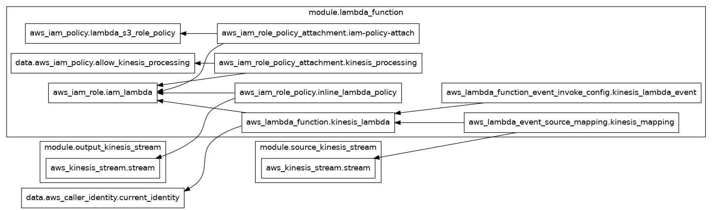
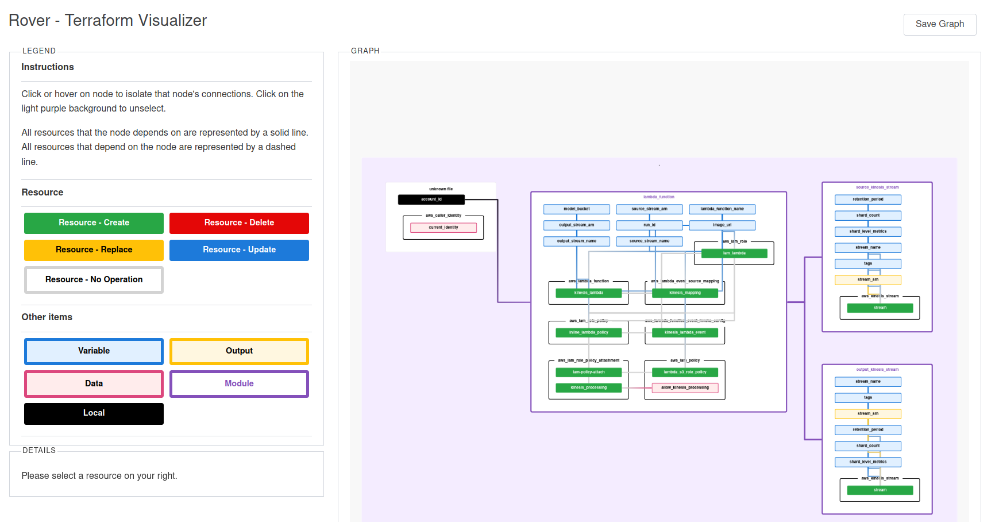

2 Introduction
In a previous post, I discussed deploying a simple streaming model to AWS, using both AWS cli and CloudFormation. Here I once again deploy the same model, but this time using terraform, following the excellent videos and code from the MLOpsZoomcamp course. terraform is particularly interesting to me because it applies to many different cloud providers (including AWS, GCP, Azure, DigitalOcean, etc…) which has led to fast adoption and a very large and engaged community. I have found the tooling around terraform to be excellent, especially the VSCode extension and TFLint.
3 Using terraform for IaC
3.1 Preliminaries
The configuration files are in this repo. If you have not done the deployments in the previous post, you will need to build the docker image and push it to the ECR before you can proceed - see this part.
Before getting into terraform we need to do some housekeeping; namely, train the model and store it in a S3 bucket. While we could also use terraform to make this bucket, we choose a simpler approach here. As before we do:
uuid=$(uuidgen)
export BUCKET_NAME=nyc-taxi-example-${uuid}
export REGION=us-east-1
export INPUT_STREAM="ride_events"
export OUTPUT_STREAM="ride_predictions"aws s3api create-bucket --bucket ${BUCKET_NAME} --region ${REGION}Now start the mlflow server (no changes here from the last post):
cd model-training
mlflow server --default-artifact-root s3://${BUCKET_NAME} --backend-store-uri sqlite:///mlflow.db --port 5012 Finally train the model:
python train_model.pyWe have just one more thing to do: we need to create an S3 bucket to store the terraform state, which is a representation of the current deployment used by terraform:
aws s3api create-bucket --bucket tf-state-mlops-zoomcamp-988e46ce-82ea-4b22-97b2-e72b6d65b27e --region ${REGION}3.2 Deployment
Some/all services used in this section cost money. Always ensure you are aware of the associated costs.
First we initialise terraform, which will download everything needed by terraform to the local directory .terraform. Switch to the model_deployment_tf directory and run:
terraform initNext, we edit the variables, which are stored in ./vars/test.tfvars. In particular, we should replace the bucket_name and run_id to correspond to the ones we have made above.
Now we can use terraform to do a “dry-run” where it shows what actions would be taken by terraform with the current configuration:
terraform plan -var-file ./vars/test.tfvarsYou will see a lot of output like
...
module.lambda_function.data.aws_iam_policy.allow_kinesis_processing: Read complete after 0s [id=arn:aws:iam::aws:policy/service-role/AWSLambdaKinesisExecutionRole]
Terraform used the selected providers to generate the following execution plan. Resource actions are indicated with the following symbols:
+ create
Terraform will perform the following actions:
# module.lambda_function.aws_iam_policy.lambda_s3_role_policy will be created
+ resource "aws_iam_policy" "lambda_s3_role_policy" {
+ arn = (known after apply)
+ attachment_count = (known after apply)
+ description = "IAM Policy for s3"
+ id = (known after apply)
+ name = "lambda_s3_policy_stg_prediction_lambda"
+ name_prefix = (known after apply)
+ path = "/"
+ policy = jsonencode(
{
+ Statement = [
+ {
+ Action = [
+ "s3:Get*",
+ "s3:List*",
]
+ Effect = "Allow"
+ Resource = [
+ "arn:aws:s3:::nyc-taxi-example-df643605-4bc1-4463-a501-a9f06cbb6f24",
+ "arn:aws:s3:::nyc-taxi-example-df643605-4bc1-4463-a501-a9f06cbb6f24/*",
]
+ Sid = "VisualEditor0"
},
]
+ Version = "2012-10-17"
}
)
+ policy_id = (known after apply)
+ tags_all = (known after apply)
}
...
At this point, make sure things look sensible, especially where we used variable substitutions, like the image URI for the Lambda.
As always, a picture is worth a thousand words, so it would be good to visualise our deployment. terraform does come with the ability to create a graph in the DOT language but it leaves much to be desired:
terraform graph | dot -Tpng > tf_default.pngwhich produces

Fortunately there are several tools that do a better job. Here we use rover which is open-source:
terraform plan -var-file ./vars/test.tfvars -out plan.out
terraform show -json plan.out > plan.json
docker run --rm -it -p 9000:9000 -v $(pwd)/plan.json:/src/plan.json im2nguyen/rover:latest -planJSONPath=plan.jsonIf you navigate to http://localhost:9000 you will an interactive visualization that looks something like
 Here you can explore every component of the deployment and how it fits into the whole. It’s very fancy!
Once we’re happy, we can actually deploy everything with:
terraform apply -var-file ./vars/test.tfvarsterraform will prompt you to answer whether you want to perform these actions. Simply type in ‘yes’ and press ‘Enter’.
You should see something like
module.lambda_function.aws_iam_policy.lambda_s3_role_policy: Creating...
module.lambda_function.aws_iam_role.iam_lambda: Creating...
module.source_kinesis_stream.aws_kinesis_stream.stream: Creating...
module.output_kinesis_stream.aws_kinesis_stream.stream: Creating...
...
Apply complete! Resources: 10 added, 0 changed, 0 destroyed.
Outputs:
lambda_function = "stg_prediction_lambda"
predictions_stream_name = "ride_predictions
That should be it! Now we are ready to do our usual test by putting some data in the input stream:
aws kinesis put-record --cli-binary-format raw-in-base64-out --stream-name ${INPUT_STREAM} --partition-key 999 --data '{
"ride": {
"PULocationID": 30,
"DOLocationID": 105,
"trip_distance": 1.66
},
"ride_id": 999
}'You should see
{
"ShardId": "shardId-000000000000",
"SequenceNumber": "49653827894563073654476683804460149207994935403549294594"
}As always, you can check that things are working using the AWS CloudConsole, or wait a bit (since it takes some time to spin up our docker image) and check the output stream:
SHARD='shardId-000000000000'
SHARD_ITERATOR=$(aws kinesis \
get-shard-iterator \
--shard-id ${SHARD} \
--shard-iterator-type TRIM_HORIZON \
--stream-name ${OUTPUT_STREAM} \
--query 'ShardIterator' \
)
OUTPUT=$(aws kinesis get-records --shard-iterator $SHARD_ITERATOR)
echo ${OUTPUT} | jq -r '.Records[0].Data' | base64 --decode | jqand as usual you should see:
{
"model": "ride_duration_prediction_model",
"version": "123",
"prediction": {
"ride_duration": 10.830198691258547,
"ride_id": 999
}
}Cleaning up is equally simple. We can just execute:
terraform destroy -var-file ./vars/test.tfvarsOnce again you will need to answer ‘yes’ to the prompt and that is it! Of course, note that the resources we created outside of terraform will still be around, like the buckets for storing the model and the terraform state.
3.3 Local testing with localstack
Sometimes, it might be helpful to be able to test a terraform deployment without actually doing it on AWS (e.g.. for complicated deployments which can take a long time, only to see them fail for a typo). Luckily, LocalStack was built just for this purpose: it provides a near-complete local replacement for AWS, so we can very quickly prototype and debug things locally. The easiest way to get started is to spin up a Docker using docker-compose, which you can find here. Then do
docker compose up -dand localstack will be running on http://localhost:4566. We can test-drive it a bit like so:
aws --endpoint-url="http://localhost:4566" s3 ls and similarly for all other commands1. Note that you don’t need to supply any AWS credentials.
Helpfully, there is a terraform script that can automatically wrap all terraform commands and redirect them to the right endpoint. To get it simply do
pip install terraform-localNow one can simply swap every terraform command to a tflocal command, e.g.
tflocal init
tflocal plan -var-file ./vars/test.tfvarsetc.
This provides a good safety net before starting the actual deployment on AWS.
Footnotes
Note that some of the AWS services (e.g., ECR) are only available in the “Pro” version of the image, which requires a subscription.↩︎